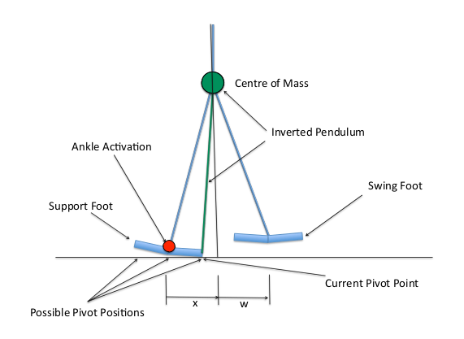

Planejamento de Passos
O planejamento de passos gira em torno do motor de caminhada desenvolvido pelo Bernhard Hengst da UNSW Sydney, que se tornou padrão da liga e é um dos principais avanços na robótica bipedal.
O documento base na íntegra pode ser encontrado aqui e uma continuação aqui. Esses artigos são bem técnicos, é onde o filho chora e a mãe não vê.
Este documento apresenda, de forma simplificada, o processo de planejamento de passos.
Metodologia
1: Modelo de simulação
- O robô bípede é modelado como um pêndulo invertido.
- Variáveis de estado: Deslocamento horizontal (
x), velocidade horizontal (x'), posição do pé oscilante (w) e tempo de ciclo de caminhada (t). - Ações de controle: inclinação do tornozelo (posição do pivô no pé de suporte) e deslocamento incremental do pé oscilante.

2: Planejamento de passos
Fomalização via Processo de Decisão de Markov (MDP): (S, A, T, R), onde:
S: conjunto de estados.A: conjunto de ações.T: função de transição estocástica.R: função de recompensa.
Uso de Q-Learning para aprendizado de reforço com fator de desconto γ = 0.9 e taxa de aprendizado α = 0.05.
Recompensa R é dada por:
- -1000 para estados fora dos limites permitidos.
- +1000 para alcançar o objetivo.
- -1 ou -10 para penalizar ações que movimentam motores.
Estado estimado via filtro de Kalman utilizando os sensores de pressão dos pés, IMU e encoder dos motores.
É importante levar em consideração que este modelo não considera movimentos coronais (laterais). Ainda não encontrei como eles são modelados
Implementação
No Tamboerijn, o módulo walking_engine da crate control/motion coordena e controla a movimentação de andar, com base no modelo de simulação descrito acima, adicionando também a lógica de movimentação dos braços e ajustes de equilíbrio e chutes.
Aqui estão os principais módulos e suas responsabilidades:
engine.rs
Define funções principais de cálculo, como calculate_foot_to_robot, para obter transformações dos pés no espaço do robô. Inclui funções matemáticas (ex.: parabolic_return e parabolic_step) que ajudam a modelar a característica parabólica do movimento.
arms.rs
Gerencia a lógica de movimentação dos braços, com estados de Swing, PullingBack, PullingTight, etc. Usa interpoladores (SplineInterpolator, TimedSpline) para transições suaves entre posturas (ex.: pull_back_joints e pull_tight_joints).
walk_state.rs
Define a máquina de estados da caminhada (Standing, Starting, Walking, Kicking, etc.).
A evolução de cada estado depende do comando recebido (Stand, Walk, Kick) e do pé de suporte (Side).
kicking.rs
Aplica ajustes nos ângulos das pernas para executar o chute (apply_joint_overrides).
Uso de JointOverride para interpolar valores conforme o tempo e a intensidade do chute.
foot_offsets.rs
Estrutura que guarda os offsets (compensações) de cada pé (forward, left). Fornece métodos utilitários como FootOffsets::zero(). É necessário por que todo o equilíbrio e modelo do robô é baseado no centro de massa, mas para realizar o movimento dos pés é necessário deslocar o ponto de referência.
balancing.rs
Implementa correções de equilíbrio, como support_leg_gyro_balancing, ajustando articulações do pé/tornozelo/quadril com base em medições de giroscópio. Inclui lógica de ajuste de passo (como step_adjustment) que corrige a posição dos pés conforme o deslocamento do tronco.